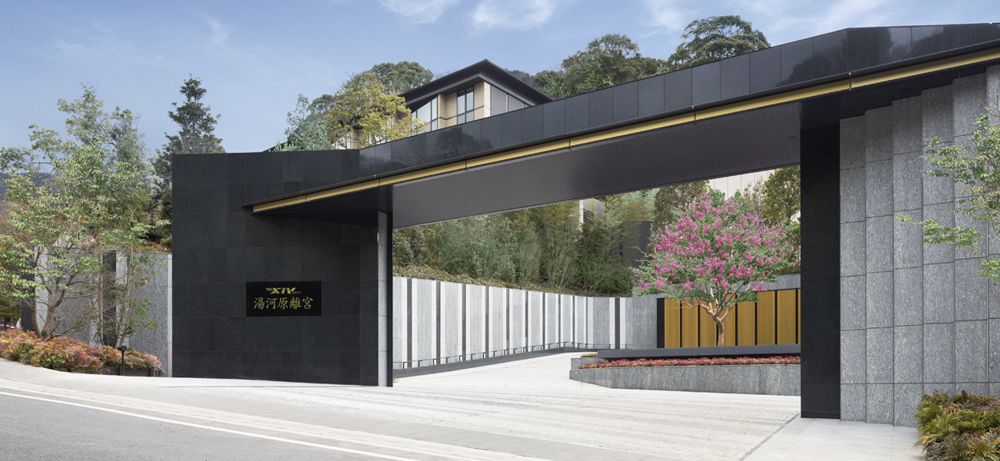
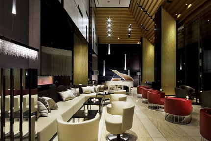
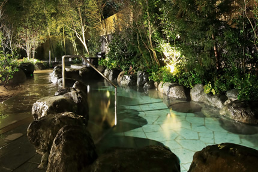
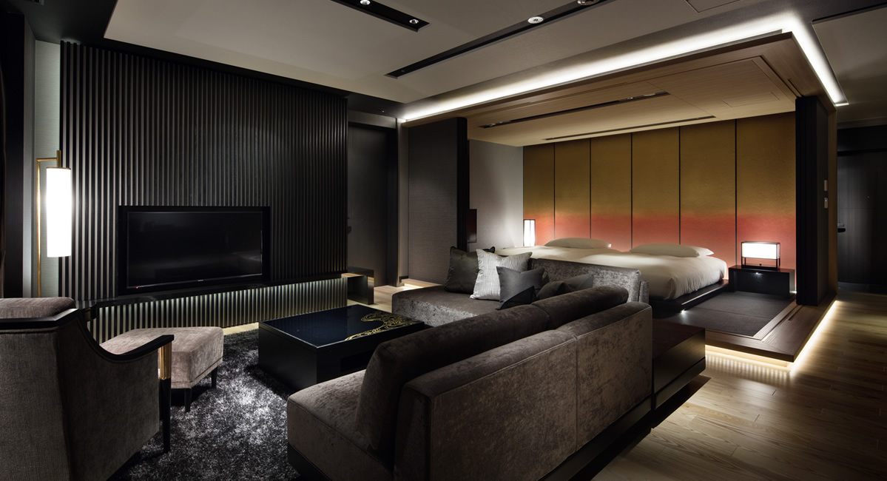

2020年11月「ビジョナリー合宿」
～時代を超える生存の原則～
圧倒的改革の入口へ。
再び解放される。禁断の合宿。
2019年末・2020年6月。
わずか10名の参加者と共に開催された合宿イベント。
ここについに復活が決まりました。
前回の開催では、参加者の多くが驚きの変革を体験し
驚愕の結末と共に幕を閉じましたが
実はそこで完成ではなかったのです。
今ここに、明確にパワーアップし再び解放されることとなりました。
はっきりと申し上げます。
この合宿はとんでもないです。
そして席数は、お部屋の関係上限られており、
今この瞬間に満席となったら即終了です。
もしもご検討くださっているようでしたら、とにかくお席を押さえていただければと思います。
なぜここに今、復活することとなったのか
しかも、このテーマ性をここに持ち込んでいるその理由をお伝えします。
私は、ただ「やってみたいからやる」ということは
これまでも一度もしてきませんでしたし、これからも一切やりません。
テーマにしても、日数にしても、ご提供形態にしても必ず必然性や理由が存在します。
今回2泊3日という合宿形式で企画した理由。
それは今回届けるビジョナリーカンパニーやビジネスの創造というテーマは
だらだらと1年や2年かけて手に入れ、考えても意味がないということがはっきりとわかっているからなのです。
2泊3日で極限まで集中することで、圧倒的変革を起こせることを確信しています。
自社・自分のビジネスを徹底的に見直し・改善をかけます。
しかも、「ビジョナリーカンパニー」という世界のリーダー達がこぞって読んでいる本によって。
世の中には、「これは手に入れた方がいいもの」というのが明確に存在しています。
そして、ビジネスを次のステージにしていく上で
絶対に外せないのがこの「ビジョナリーカンパニー」のシリーズ。
読まれたことがある方はわかると思います。その衝撃の度合い。
そして、読んだだけでは実践があまりにも難しいという真実を。
そして、読んだことがない方は、このチャンスを逃さないでください。
この５冊を読み解き実践するだけで、おそらく最低でも3年は要します。
そこをたったの3日に短縮して、売り上げも組織もビジョンも
圧倒的な場所にお連れします。
繰り返します。
必ず、このビジョナリーカンパニーシリーズの原則を完全にインストールしてください。
これは、できたらとか、したほうがいいというレベルではありません。
「必ず」です。
３日間集中することで、一気に変革を起こすことができることは当たり前です。
マインドも、意思決定も、別レベル持っていきます。
まるで違う次元です。
経営者として、ビジネスを捉える視点・知識・考え方・発想法
それらを一気にインストールするだけではなく自社のビジネスに落とし込み、戦略・計画・ビジョンを描く。
もう後戻りはできません。
この衝撃を手に入れて2021年を圧倒してください。
冒頭でこんなことを申し上げるのもおかしな話ですが
圧倒したとお感じになれないのであれば、全てこちらで費用を負担します。
次の開催は一切約束できません。
セミナーでは、ひとつひとつを自分が理解して、落とし込んでいくことが重要でした。
扱うテーマが人生という「長い期間」だったからです。
また、セミナーでは、セミナー前や、セミナー後、セミナーの間の期間という時間は、
「日常」に思考が移り変わります。
しかし、合宿では、スタートしてからセミナー中はもちろん、食事中も、朝も、夜も、
思考を一度も途切れさせることなく「ビジョンを創造する」ということに没頭させること
ができます。
2021年が別物にならないわけがないのです。
お約束できるのは、2泊3日が終わるとき、経営・ビジネスに関する感覚が
別次元になっているということです。
これまで、自分流の感覚でビジネスをされている方は、
一度、本気でビジネス全体を練り直し、見直してみることをお勧めします。
そのための指標がこのビジョナリーカンパニーには大量に詰まっています。
多くのひとは、いろいろな問題が出てきて、やっとそれに対応する方法を考えます。
そのため、ビジネスが、集客・育成・採用・組織づくりなどが、バラバラ・ちぐはぐになっています。
ビジネスや会社は「機械」ではありません。「いきもの」です。
だから「部分」ばかり扱ってはダメだし、部分だけを交換することができません。
「全体」を考えることが必須なのです。
これだけの変化が激しいときに、一部分ずつコツコツ考えていても、
もう数ヶ月が経てば考え方が変わってしまっていませんか？
だから、2泊3日で一気に経営全体をバージョンアップしてしまうのがいいのです。
「え？そんなことできるの？」
「こっちは30年もやってきているんだ！若造になにがわかる」
「経営学者でもない、大企業の経営者でもない、有名コンサルタントでもないのに！」
などなど思う方は、どうぞ気にせずこのままページを閉じてください。
学者や、一企業の経営者、他のセミナー講師と私が圧倒的に違うのは、私が「実践者」だということです。
10年間、真剣勝負をしている経営者の方、
リーダーの方を男女・年齢問わず数万人という方をサポートし変革を実現してきました。
机上の空論ではありません。
現場で見てきているのです。
その中には上場企業の経営層の方もいましたし、
日本有数のエグゼクティブサーチの方と共に、エグゼクティブ育成に携わらせて頂いたこともあります。
だから、一緒に経営を進化させようと思う方にぜひいらして頂きたいのです。
この合宿は再び開催するかもしれませんし、二度と開催しないかもしれない。
なぜなら、ご参加いただいた方全員が
確実に圧倒的変革を遂げるまで向き合う覚悟があるからです。
ひとりの落ちこぼれも出さず合宿後もフォローアップします。
ゆえに次回開催は本当にお約束できません。
これだけ自信があるものをレギュラー化しない。
ここにどれだけの覚悟があるかをお感じいただければと思います。
震えています。
時々耳にします。
ビジョナリーカンパニーって大きな会社の話じゃないの？
うちみたいな中小でも関係ある？
なんて言葉を。
残念ながらビジョナリーカンパニーの本質や極意に到達できなかったと、
言わざるを得ません。
ビジョナリーカンパニーが扱っているのは、「大企業」という組織の大きさではありません。
ビジネス・企業を「進化させるパワー」について扱っています。
それこそ、大企業がこぞって学んでマネージャーたちに取り入れているのには理由があるのです。
もっといえば、中小企業こそ学ぶべきものではないかと思います。
たった一つのワンフレーズで震えが止まらなくなるほどの
衝撃で満ち溢れています。
ビジョナリーカンパニーが指し示すひとつの指標を手に入れただけで
組織の根本がひっくり返ったなんて話も珍しくありません。
ビジョナリーカンパニーの全6冊2000ページを超える膨大なエッセンスをインストールしましょう。
これは読書では決して得られないレベルであることをお約束します。
そして、根本から色々なものが音を立てて崩れ去り
いつか夢見た未来がそこには出現することでしょう。
まず根本的に変わるのは、会社のビジョンです。
自社がどこを目指すのかがはっきりと描き直されます。
また、経営者が見逃しているところは
組織の中でも完全に弱点になるところです。
ビジョナリーカンパニーの中にある「飛躍の法則」だけでなく
「衰退の5段階」によって、飛躍する基盤を自社に取り込むと同時に、
衰退を避けるために注意することがはっきりします。
シンプルに言えば、ビジョナリーカンパニーになるということなのですが
著者たちも言うように、それは会社のサイズではなく
「真の偉大なカンパニーをつくる」ということです。
そして最も重要なことは、この合宿にご参加いただくあなた自身が、
そうした会社をつくりだせる「真の偉大なリーダーになる」ということです。
それはあなたの会社にとって、あなたの顧客にとって、
あなたのスタッフにとって、どんな意味があるのでしょうか？
完全に別の会社とリーダーに生まれ変わることを意味します。
確実に、周りを別次元に導いていけるようになるのです。
もしもあなたが個人事業主だった場合
あなたがどう考えているかが重要です。
一生、個人でやっていきたいですか？
それとも、社員や外部契約かは関係なく、チームで優れた未来をつくっていきたいですか？
もしも後者なら即決してください。
そういう方にこそ、決断としてはイージーなものです。
他に選択肢がないと言えるぐらいのレベルです。
多くの人や組織が
「仕事が増えてきたから、チームづくりを学ぼうかな」と考えますが、
根本的にもう遅すぎます。
そのため、仕事を止めなければいけなかったり、
クオリティーの低い仕事をスタッフに提出させていたり、
教育のために仕事の量を減らしたり、結果的に顧客満足度が下がったり、
とんでもないコストを支払っています。
チームを入れる器があなたのビジョンにありますか？
たくさんの顧客があなたという器の中に入るだけの準備ができていますか？
ビジョナリーカンパニーをなぜ学んでもらいたいのかというと、
あなたという器を、真の偉大なリーダーのレベルになってもらいたいからなのです。
考えてみてください。真に偉大なリーダーになって、
仕事に困るってありそうでしょうか？
集客ができないってありそうですか？
ありえないんです。
器が小さくて、自分の欲求だけに振り回されているので、
顧客や社会が支持してくれないのです。
ビジョナリーカンパニーを学ぶことで、
真に学ぶのはリーダーとして変革することです。
変化の時代。
今だからこそということをご理解いただきたいのです。
今、この時期をどうするかで、ここから先の一年が相変わらずのモノとなってしまうのか
分岐点となる革命的な一年を送るのかを分けるのです。
そう、確実に分けるのです。
あなたは目的地と地図と攻略法が手に入っている状態で
障害物レースに参加したいでしょうか？
それとも、手探りでその場、その場で判断したり
行き止まりを戻ったりしながら、レースに参加したいでしょうか？
ビジョナリーカンパニーは「地図と攻略法」が載っています。
新たな時代がスタートする前に、
「今どこに到達して、どういう方針をとればいいか、完全に掴んだ！」
という状態でスタートするのか、
それとも気持ちだけ勇ましく、根拠のない自信で突き進んで試行錯誤を繰り返すのか、
どちらが別次元に行けそうでしょうか？
新たな他時代がスタートする前に「目的地と攻略法」を手に入れている方が、
圧倒的に高みに登る１年にすることができます。
それを手にしないでスタートするという選択肢は絶対にあり得ません。
もしもこれまで、池田貴将のことを信頼してくれていて、
もしもご自身が経営者としてアップグレードしたいのであれば、
こんな機会は存在しませんから、絶対に見逃さないでください。
経営者としてのマインドを磨くだけではありません。
経営者としての習慣もお伝えします。
またディナータイムには、特別セミナーとして
「戦略・ビジネスモデル」についての講義を
わたしのビジネスパートナーであり
数千社の戦略・マーケティング・ビジネスモデルづくりなどに関わってきた
雨宮に話してもらいます。
雨宮がこういった場で、全力でお話をすること自体が
レアであることはご存知かと思いますが、今回は絶対に必要なピースなんです。
正直に申し上げて、
経営・ビジネスの世界であれば、今回の合宿の価格５０万円というのは、
あまりにも安価だと思っています。
合宿後に一か月、チャットワークを使った
フォローアップも実施します。
はっきり言って、人件費や設備投資のコストを考えてみてください。
それに比べて、このイベントで得られる結果を考えると
1つの新しい決断から、数秒でクリアされる投資金額です。
これまでと同じことを繰り返すのか、
新規事業や、自分の枠の外にある発想法を手に入れるのか、
もはや答えは明白だと思います。
ぶっちゃけて言えば、この合宿イベントは
ご自身が引退するまで、何度でも参加したくなるくらい
投資効果の高いセミナーになります。
だって、永遠に読みきれない成功する経営者の原点を、
２泊３日で自分の現場に落とし込むわけですから。
年間に分散してしまえばわずか月額４万円ちょっとの投資額で
確実に別次元に向かうというイベントです。
４万円の飲み会を毎月行ったところで経営自体はほぼ変わりませんが
この合宿一発で別レベルの経営力が手に入ってしまいます。
私たちは本気です。
本気で何かをお感じになられたら迷わずにお申し込みください。
繰り返しになって大変恐縮ですが
合宿イベントという、お部屋が限られたものですから
満席になればそこで受付終了。次回開催はお約束できません。
迷われているうちに、このチャンスを決して逃さぬようによろしくお願いいたします。
それでは、ご一緒できることを心より楽しみにお待ちしております。

【講師プロフィール】
雨宮は、広告・戦略・マーケティングのプロフェッショナルとして、10年に渡って私（池田貴将）の想いを理解し、ビジネスを支えてくれています。
目先の売上が上がることに価値を置く世の中で、雨宮はいかに「永続するビジネスを築くか」ということを主眼として発想しています。
10年間、毎週5〜6時間の議論をしつづけています。その議論の中から生まれたサービスや商品や、
企画やアイデアが、オープンプラットフォームという会社と、池田貴将という個人をつくってきました。
彼は表立って言わないのですが、もともとは会社員として広告の世界で10年、
コピーライティングやセールスライティング、デザイン、マネジメントをしてきただけでなく、
営業部の部長としてもトップセールスを継続してきました。起業後は一緒にビジネスをしてきていますが、
さまざまな企業からコンサルティングを依頼されるので、
一度本格的に勉強しようと、ウェールズ大学のMBAに行き成績優秀者として卒業しています。
実の世界と学問の世界を渡り歩いている雨宮を、今回みなさまにご紹介できることは僕にとってもとても嬉しいことです。
ディナーセミナーでは、彼に戦略やマーケティングの話をしてもらいますが、新しい視点が必ず手に入ります。
もしかしたら、雨宮の話を聞けるのを一番楽しみにしているのは僕かもしれません。
僕が絶大な信頼を置いている人物です。
|
開催概要 |
|||
|---|---|---|---|
|
タイムテーブル（予定） ※全て、休憩は適宜とりますのでご安心ください。 |
|||
2020年 |
12：45 エクシブ湯河原「集合」 |




|
|
|
2020年 |
7：30 朝食 |
||
|
2020年 |
7：30 朝食 |
||
| 開 催 場 所 |
エクシブ湯河原離宮 |
||
| 定 員 |
8名 |
||
| 受 講 料 |
【新規】 500,000円（税別） |
||
| お支払方法 |
銀行振込 or クレジットカード | ||
| 領収書の発行 |
領収書をご希望の方は、お申込みの際【備考欄】にその旨ご記載いただくか |
||
| お申込完了から 当日までの流れ |
❶ 本ページのご注文フォームから必要事項をご記入の上、ご注文お手続きを完了下さい。 |
||
| 主催・お問合せ |
ライフストラテジー株式会社 |
||